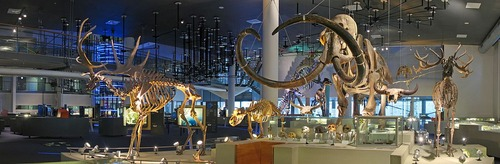
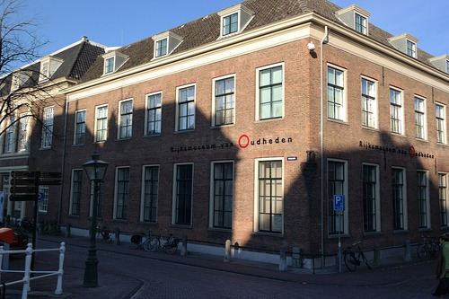
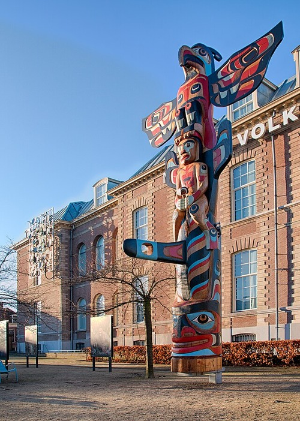

Leiden
Naturalis Biodiversity Center
The Naturalis Biodiversity Center is a biodiversity research center and national museum located in Leiden, Netherlands.
National Museum of Antiquities
Archaeology's national center is the National Museum of Antiquities. Gathering a state collection of more than 150,000 archaeological artifacts from ancient Egypt, the Near East, the Greek and Roman world, and the early Low Countries, the museum is one of the five oldest in the Netherlands.
National Museum of Ethnology
One of the oldest ethnological museums in the world, the National Museum of Ethnology (Wereldmuseum Leiden) regularly features exhibitions that address a range of current issues and discussions. You will become more aware of the vast array of tales and viewpoints in the globe after taking a tour of the museum.
